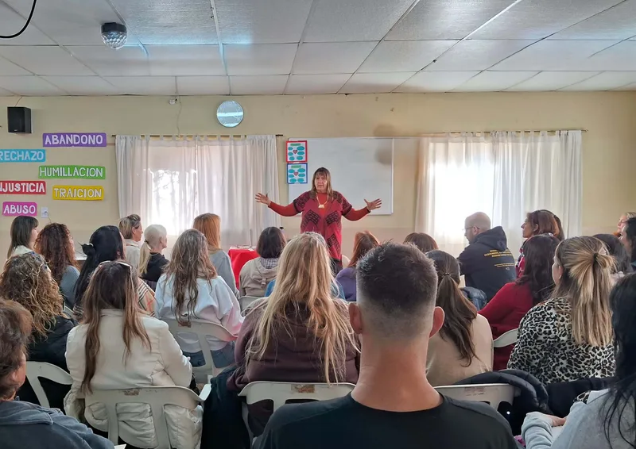

Encuentros presenciales
Espacios quincenales para aprender, practicar y compartir el recorrido en presencia.
Modalidad Presencial 2027
Un recorrido vivencial, práctico y acompañado en Villa Carlos Paz.
Una propuesta de formación presencial para quienes desean transitar un proceso profundo de aprendizaje, experiencia personal y práctica de acompañamiento.

Abren en noviembre de 2026
Marzo de 2027
8 meses
Villa Carlos Paz
Encuentros quincenales
Impresos y digitales
Espacios quincenales para aprender, practicar y compartir el recorrido en presencia.
Un proceso de aprendizaje que integra la propia historia, el grupo y la experiencia compartida.
Ejercicios, casos y situaciones concretas para integrar teoría y práctica paso a paso.
Seguimiento del proceso y un marco cuidado para sostener la formación.
Un recorrido presencial con materiales, práctica y comunidad para sostener el aprendizaje.
La modalidad presencial 2027 propone un recorrido de 8 meses en Villa Carlos Paz, con encuentros quincenales, material de estudio y prácticas guiadas para integrar el aprendizaje.
Noviembre de 2026
Marzo de 2027
Villa Carlos Paz
Quincenal
Una modalidad para quienes desean aprender en presencia, compartir el proceso y practicar en un entorno cuidado.
Para observar la propia historia desde una mirada biológica, emocional y empática.
Para sumar recursos prácticos y profundizar el acompañamiento de procesos.
Para aprender en grupo, con cercanía, intercambio y práctica vivencial.
Ocho unidades de estudio y aprendizaje para una formación integral.
Cerrada
Abre en noviembre de 2026
Dudas frecuentes sobre la modalidad presencial 2027.
Consultá por apertura de inscripciones, fechas y próximos pasos.
Escribir por WhatsApp